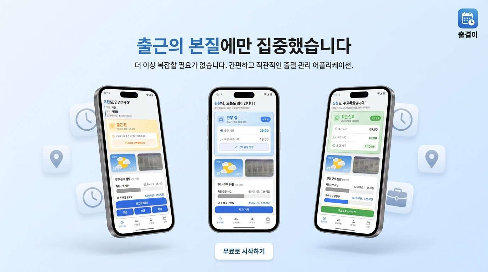

PORTFOLIO
요구사항부터 출시까지 모두 경험해본, 책임감으로 똘똘 뭉친 모바일 개발자, 정유환입니다.
01
ABOUT ME
정유환
Mobile App Developer
요구사항을 듣는 순간부터 스토어 출시까지, 모바일 개발의 전 과정을 혼자서 책임져 왔습니다. 맡은 일은 끝까지 가져가 완성하는 것을 가장 중요하게 생각합니다.
'좋아졌다'는 느낌으로 끝내지 않습니다. 응답 속도, 정확도, 작업 시간처럼 눈에 보이는 숫자로 개선을 확인하고, 그 결과를 다음 판단의 근거로 삼습니다.
처음 접하는 기술도 원리까지 파고들어 내 것으로 만듭니다. 프레임워크가 막히면 네이티브로 직접 뚫고, 완벽한 답이 없을 때는 지금 할 수 있는 가장 좋은 방법을 골라 끝을 봅니다.
INFO.
EXPERIENCE.
도로시
1년 3개월
사원 / 모바일 개발
2025.02 — 2026.05
EDUCATION.
부천대학교
졸업
컴퓨터 소프트웨어과
2020.02 — 2025.02
CREDENTIALS.
정보처리산업기사2024.12 취득
운전면허증2022.08 취득
졸업 작품전 최우수상 (2025)
02
SKILLS
PLATFORM
Flutter
크로스 플랫폼 앱 아키텍처 설계, 상태 관리 및 모듈화 가이드 준수
Advanced
Android
Studio
네이티브 플러그인 연동 및 프로파일링 툴을 통한 성능 최적화
Advanced
Xcode
iOS 빌드 환경 설정, 프로비저닝 프로파일링 및 UI 레이아웃 대응
Basic
React Native
기본 컴포넌트 활용 및 환경 셋업, 코드베이스 이해 가능
Basic
LANGUAGE
Dart
비동기 프로그래밍(Stream/Future), 선언형 UI 프레임워크 최적화
Advanced
Kotlin
Android 안드로이드 네이티브 비즈니스 로직 및 채널 통신 구현
Advanced
TypeScript
정적 타입을 활용한 모듈식 스크립트 작성 및 인터페이스 설계
Intermediate
Swift
기본 문법 이해 및 iOS 네이티브 브릿지 코드 분석
Basic
ARCHITECTURE
MVVM
View와 비즈니스 로직의 명확한 분리, AAC 기반의 상태 전파 구조 설계
Advanced
Clean
Architecture
Data / Domain / Presentation 계층 분리를 통한 도메인 중심의 유연한 변경 대응
Advanced
COLLABORATION
Git
Git-flow 브랜치 전략 기반 협업 및 코드 히스토리 추적 관리
Advanced
App / Play Store
양대 마켓 프로덕션 릴리즈 경험 및 배포 파이프라인 관리
Advanced
Jira & Figma
애자일 스프린트 프로세스 참여 및 UI/UX 디자인 에셋 반영
Intermediate
04
EXPERIENCE
(주)도로시
대학교 국가근로 연계 / 모바일 개발
2024.10 — 2025.02 4개월
사원 / 모바일 개발
2025.02 — 2026.05 1년 3개월
Road Keeper 브라운필드 프로젝트 유지보수
2024.12 — 2026.05 (1년 5개월)온디바이스 AI 포트홀(도로균열) 실시간 탐지 앱
팀 구성원
- 모바일 1명(본인)
- AI 엔지니어 1명
- 백엔드 1명
- 디자이너 1명
사용기술
Android
Kotlin
CameraX
LiteRT
Hilt
Room
Retrofit
Firebase
Clean Architecture
핵심역할
- CameraX ImageAnalysis를 활용해 실시간 프레임을 AI 모듈에 연결, 전처리/후처리 로직 구현 및 포트홀 감지 시 서버 전송 처리
- Android 16KB 페이지 크기 정책 대응을 위해 PyTorch 모델을 TensorFlow Lite(LiteRT)로 전환
- 2차 고도화 시 불필요한 UI 제거 및 사용자 편의성 중심으로 화면 전면 개편
- 버전 업데이트 과정에서 누적된 레거시 코드 정리 및 클린 아키텍처 기반으로 전면 리팩토링, 유지보수성 개선
- 앱 이슈 대응 및 지속적인 유지보수, 배포 진행
성과
- 모델 추론 응답속도 약 65% 단축, 탐지 정확도 약 20% 향상
- 이미지 전처리 최적화로 장시간 사용 시 기기 발열 개선
- Android 16KB 정책 대응으로 스토어 정책 준수 및 신규 기기 호환성 확보
- 레거시 코드 제거 및 리팩토링으로 신규 기능 추가 소요 시간 약 30% 절감
INTECH 열화상 카메라 예측강도 측정 앱 그린필드 프로젝트
2025.03 — 2025.08 (5개월)열화상 카메라 연동 기반 아스팔트 예측강도 측정·분석 앱
팀 구성원
- 모바일 1명(본인)
- 디자이너 1명
사용기술
Flutter
Dart
FLIR SDK
Method Channel
Android Native
Bluetooth
Hive
Provider
GetIt
Dio
핵심역할
- 발주사 직접 미팅을 통해 요구사항 수집, 사내 지원 없이 열화상 카메라 리서치부터 FLIR 본사 연락·SDK 수급까지 단독 수행
- Flutter 미지원 SDK를 Method Channel로 해결 — Android Native에서 FLIR SDK 연동 후 카메라 시작/종료, 실시간 열화상 이미지 데이터를 Flutter View로 전달
- 화면 터치 시 해당 영역의 열 데이터 시각화 구현, 캡처 이미지를 9분할하여 위치별 온도 분석 및 발주사 제공 계산식 기반 예측강도 실시간 산출
- 서버 없이 Hive로 전체 데이터 관리, 측정 완료 후 JSON·사진을 Android 로컬에 저장하여 이력 조회·재촬영·편집 기능 구현
- 측정 데이터 Excel 파일 추출 기능 구현 및 납품 후 현장 테스트, 운영 인수인계까지 단독 완료
성과
- Flutter 미지원 SDK를 Method Channel로 해결, 크로스플랫폼 환경에서 네이티브 기능 100% 구현
- 서버 없이 Hive + Android 로컬 저장 구조로 오프라인 환경에서도 전체 기능 동작
- 측정 데이터 Excel 추출 기능으로 현장 보고서 작성 시간 단축
- 요구사항 수집부터 납품·인수인계까지 전 주기 단독 수행
CJ푸드빌 점포관리시스템 그린필드 프로젝트
2025.08 — 2026.01 (5개월)글로벌 점포 관리를 위한 Android / iOS 네이티브 앱
팀 구성원
- 모바일 1명(본인)
- 웹 프론트엔드 3명
- 백엔드 1명
- 디자이너 1명
사용기술
Android
Kotlin
WebView
BiometricPrompt
ML Kit
FCM
iOS
SwiftUI
WKWebView
LocalAuthentication
AVFoundation
APNs
JavaScript Bridge
Firebase
핵심역할
- 웹 완성 단계에서 투입되어 Android(Kotlin) / iOS(SwiftUI) WebView 앱 신규 구축
- WebView-Native 간 양방향 메시지 파이프라인 설계 및 구현 (QR 인식 결과, FCM 토큰, 로그인 상태 등 Web으로 전달)
- 내부 저장소 보안 키 기반 자동 로그인 + 생체인증(BiometricPrompt / LocalAuthentication) 연동 구현
- ML Kit(Android) / AVFoundation(iOS) QR 코드 인식 후 Web으로 데이터 전달
- FCM 환경 4개(Android 개발·운영 / iOS 개발·운영) 구성 및 로그인 시 토큰 Web 전달 처리
- Android APK / iOS Enterprise(IPA) 사내 내부 배포 환경 구성 및 빌드 버전 비교 기반 강제 업데이트 알럿 구현
성과
- Android / iOS 플랫폼별 Native 앱을 독립적으로 설계·구축하여 동일한 WebView 기반 서비스 제공
- WebView-Native 간 메시지 파이프라인 설계로 모든 핵심 기능(QR, 생체인증, FCM)을 Web과 완전 연동
- FCM 환경 4개(Android·iOS 각 개발·운영) 독립 구성으로 환경별 푸시 알림 안정적 운영
- iOS Enterprise 배포 포함 사내 내부 배포 환경 구성 및 빌드 버전 기반 강제 업데이트 체계 수립
레드캡 RMS 앱 통합 브라운필드 프로젝트
2025.09 — 2025.10 (1개월)기존 React Native 앱에 WebView를 통합해 법인 차량 발주 관리 기능을 확장한 앱
팀 구성원
- 모바일 1명(본인)
- 웹 프론트엔드 2명
- 백엔드 1명
- 디자이너 1명
사용기술
React Native
TypeScript
WebView
JavaScript Bridge
Android
iOS
핵심역할
- 기존 React Native 앱에 WebView 라우트 신규 추가 및 화면 통합
- WebView-Native 간 양방향 메시지 파이프라인 설계 및 구현
- 메시지 파이프라인을 통한 PDF / Excel 파일 다운로드 후 모바일 저장 기능 구현 (Android / iOS 플랫폼별 분기 처리)
- WebView 내 이벤트 핸들링 연동
성과
- WebView 통합으로 기존 앱 대비 제공 기능 범위 확장
- 메시지 파이프라인 기반 파일 다운로드 구현으로 PDF / Excel 현장 즉시 저장 가능
- 단일 코드베이스에서 Android / iOS 동시 대응으로 플랫폼별 중복 개발 비용 절감
Ludis 브라운필드 프로젝트
2024.11 — 2024.12 (1개월)자전거 라이딩 경로 탐색 앱
팀 구성원
- 모바일 2명(본인 지분 15%)
- 웹 프론트엔드 1명
- 백엔드 1명
- 디자이너 1명
사용기술
Flutter
Google Maps API
Geocoding/Reverse Geocoding
Bluetooth
iOS/Android
핵심역할
- 국내 전용 Tmap 지도를 Google Maps API로 교체하여 해외 서비스 가능하도록 전환
- Tmap 기반 장소 검색을 Google Geocoding / Reverse Geocoding으로 리뉴얼하여 글로벌 위치 검색 대응
- 한국어·영어·프랑스어 다국어 언어팩 구조 설계 및 언어 전환 기능 구현
성과
- Google Maps API 전환으로 글로벌 지도 서비스 지원 범위 확장
- 한국어·영어·프랑스어 다국어 지원으로 해외 사용자 접근성 확보
04
PERSONAL PROJECTS

정직
영수증 하나로 지출과 정산을 간편하게!
2026.02 ~ 2026.05 (3개월)

출결이
웹으로만 제공되었던 출결 시스템을 앱으로 리뉴얼
2025.10 ~ 2025.12 (2개월)
CampusLife (졸업작품전)
하나의 어플리케이션으로 다양한 학교활동을 경험해 보세요.
2024.6 ~ 2024.12 (6개월)